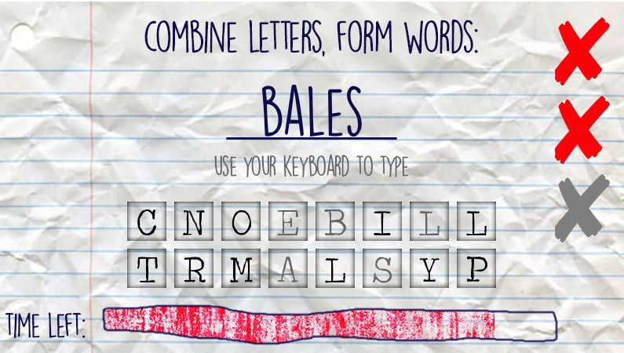
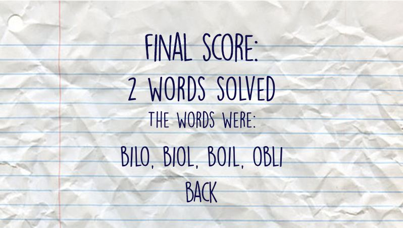
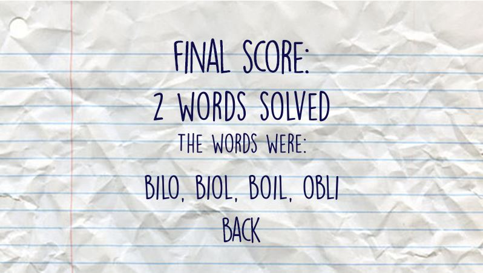

Unscramble (CS11-MP1) Documentation¶
Installation¶
The whole game can be copied to your directory by downloading the source code here or by cloning the git repository like so:
git clone http://www.github.com/lickorice/cs11-mp1.git
Also, make sure you have Pygame installed for Python 3.
You can install Pygame through pip like so:
pip3 install pygame
To start the game, run the game through Python 3 in the command terminal with the following command (given that you are in the root directory of the program):
py -3 main.py
In the absence of Pygame, the CLI version of the game will boot instead.
Configuration¶
Choosing a dictionary¶
In the config folder of the program, in cfg_general.json, you can change the directory of the
dictionary file to be used. Currently, the game has three built-in dictionaries, dictionary_sample.txt,
dictionary_small.txt, and by default, dictionary.txt. Simply change the parameters here:
{
"DICTIONARY_FILE": "assets/dictionary.txt"
}
How to Play¶
Upon starting the game, you will be welcomed by the main menu screen. Here, you can choose from the two game modes: Anagram Mode and Combine Mode. You may also choose to quit the application; and you can quit the application any time in the game by clicking on the default close button of the program window.

Anagram Mode¶
In Anagram Mode, you are tasked to find anagrams of the word shown on the screen. The word and its anagrams are based off the dictionary file you used. To play, simply use your keyboard to type, and pressing Enter will confirm your answer.

Combine Mode¶
In Combine Mode, you are to find words that use letters from the letter pool below the answer line. You may only use a letter once in an answer, and you can’t repeat previously correct answers.
Ending the Game¶
Both game modes will end when the timer bar on the bottom is emptied (in 100 seconds) or when you hit three mistakes. Other than that, it is possible to end the game prematurely when you have found all possible anagrams of a word (Anagram Mode) or when you have reached the absolute maximum number of points achievable (Combine Mode).
In the score screen after the game ends, either your equivalent scrabble points or your number of words solved shows up, in Combine Mode and Anagram Mode, respectively.
 

Source Code Documentation¶
main.py¶
This is the .py file for starting the game Run this to run the game.
-
main.main()¶ The main method that is run when running the game.
interface.py¶
This is the .py file for the interface framework. (PyGame)
This function instantiates a button rectangle. It returns a Boolean whether or not the mouse is hovering over it. The Boolean value is to be passed again into
select_statein order to avoid recursive effects (such as the hover audio playing again).Returns: (bool)
select_state.Parameters: - x1 (int) – coordinates on the x-axis where the rectangle starts.
- x2 (int) – coordinates on the x-axis where the rectangle ends.
- y1 (int) – coordinates on the y-axis where the rectangle starts.
- y2 (int) – coordinates on the y-axis where the rectangle ends.
- select_state (bool) – if the button is currently hovered on by the mouse.
- button_action (function) – the function to be performed on button click.
- audio_url (string) – path for the audio file to be played on hover.
- pointer_url (string) – path for the pointer image to be rendered on hover.
By default, audio_url and pointer_url are assigned None, and will not play any audio and show any pointers on button hover.
-
interface.anagram_loading_screen()¶ This function instantiates the anagram game loading screen.
This is called by interface.anagram_screen and should not be called directly.
-
interface.anagram_score_screen(answer_list)¶ This function instantiates the anagram score screen instance.
This is called by interface.anagram_screen and should not be called directly.
Parameters: answer_list (list) – a list of words the user has correctly answered.
-
interface.anagram_screen()¶ This function instantiates the anagram game instance.
This function is called directly from interface.start_menu through a button click.
This function instantiates a back button rectangle.
Functionality is the same with
interface.add_button.
-
interface.combine_score_screen(letter_string, max_points)¶ This function instantiates the combine score screen instance.
This is called by interface.combine_screen and should not be called directly.
Parameters: - letter_string (string) – the randomly generated string used in the game mode.
- max_points (int) – the maximum number of points achievable with the string.
-
interface.combine_screen()¶ This function instantiates the combine game instance.
This function is called directly from interface.start_menu through a button click.
-
interface.fade(background_url, fade_type='out', time_delay=3)¶ This function fades a background in or out, given its url and fade type.
Parameters: - background_url (string) – path for background image.
- fade_type (string) – [
"out"/"in"] for fade out or fade in, respectively. - time_delay (int) – delay in seconds before fading.
-
interface.mistakes(count)¶ This function instantiates a mistakes counter on the screen. By default, this renders for a maximum of three mistakes per game. The boolean returned by this function indicates if the user has already made three mistakes.
Returns: (bool) True if mistakes reach three, False if otherwise. Parameters: count (int) – number of mistakes by the player
-
interface.splash_screen()¶ This function instantiates the splash screen.
-
interface.start_game()¶ This function starts the whole game.
This function instantiates the game menu.
This is called when a game ends or when the splash screen ends and should not be called directly.
-
interface.start_transition()¶ This function acts as a bridging instance for the menu.
This is called when a game ends and should not be called directly.
-
interface.swipe(background_url)¶ This function sweeps a background in from the bottom, given its url.
Parameters: background_url (string) – path for background image.
-
interface.text_blit(text, font_size, font_url, rgb, center=True, x=None, y=None)¶ This renders given text onto the game screen.
Parameters: - text (string) – literal string of text to be rendered.
- font_size (int) – font size (in pixels) of text.
- font_url (string) – path for the font file (.ttf/.otf) of the font.
- rgb (list/tuple) – [
red,green,blue] int tuple/list for the RGB color. - center (bool) – if coordinates are aligned according to text’s geometric center.
- x (int) – coordinates of render location on the x-axis.
- y (int) – coordinates of render location on the y-axis.
If x and y are both left None, the text is automatically rendered on the center of the screen.
If center is on False, the text is rendered with x and y as its top-right orientation.
-
interface.timer(count)¶ This function instantiates a timer on the screen. By default, the timer runs for 100 seconds.
Returns: (bool) True if timer has ended and False if otherwise. Parameters: count (float) – current count in seconds.
cli_interface.py¶
This module is only run when Pygame is not installed in the system.
-
cli_interface.anagram_screen()¶ This function instantiates the anagram screen.
-
cli_interface.combine_screen()¶ This function instantiates the anagram screen.
-
cli_interface.input_prompt(mistakes)¶ This is the equivalent of the mistake counter in the original Pygame rendition. However, this is integrated to the input prompt in the CLI.
Returns: (bool) if the time has ended or if mistakes reach 3, (string) the prompt string. Parameters: mistakes (int) – the number of mistakes the player currently has.
-
cli_interface.start_game()¶ This function starts the game in CLI mode.
This function shows the main menu in CLI mode.
engine.py¶
This is the .py file for the game engine.
-
engine.anagram_correct()¶ This function increments the number of words solved by the player.
-
engine.anagram_end()¶ This function returns the number of words solved by the player.
Returns: (int) player’s scrabble points upon game end.
-
engine.anagram_init()¶ This function starts the anagram game.
In addition, it also returns a word (regardless of the number of anagrams) for the loading sequence to show.
Returns: (string) temporary target word for the game, (list) list of anagrams.
-
engine.combine_correct(word, letter_string)¶ This function checks whether or not the player got the answer correctly.
If the player is correct, it increments the players points, and returns a True value. Otherwise, it does nothing and returns a False value.
Returns: (bool) check result.
-
engine.combine_end()¶ This function returns the total points achieved by the player upon game end.
Returns: (int) player points.
-
engine.combine_init()¶ This function starts the combine game.
In addition, it returns the string and the maximum points achievable using the string during the game.
Returns: (string) letter pool, (int) maximum points.
-
engine.combine_points()¶ This function returns the total points of the player.
Returns: (int) player points.
-
engine.init_dictionary(filename)¶ This function initializes the game’s dictionary given a filename.
Returns: (bool) if the dictionary has been initialized correctly. Parameters: filename (string) – path for the dictionary (this is set in the config file).
anagram.py¶
This contains the code and logic for the first gamemode, SEARCHING FOR ANAGRAMS.
Functions in this file are used by engine.py and are not meant to be used directly by neither interface.py nor main.py.
-
anagram.anagrams(target_word, input_dict)¶ This function returns a list of words given an anagram and a dictionary.
Returns: (list) list of anagrams.
Parameters: - target_word (string) – word used to search for anagrams.
- input_dict (list) – dictionary to be used to search for anagrams.
-
anagram.init_word(dictionary, word_count)¶ This method instantiates a word with its corresponding anagram list.
Returns: (string) random word, (list) anagram list.
Parameters: - dictionary (list) – dictionary list to be used.
- word_count (int) – total number of words in the dictionary.
combine.py¶
This contains the code and logic for the second gamemode, COMBINING WORDS.
Functions in this file are used by engine.py and are not meant to be used directly by neither interface.py nor main.py.
-
combine.check_answer(sequence_str, input_str, input_dict)¶ This function checks if your answer is within bounds of the generated string and is valid based on the dictionary.
Returns: (bool) True or False if answer is correct.
Parameters: - sequence_str (string) – the sequence string provided by the game.
- input_str (string) – the answer from the player.
- input_dict (list) – the dictionary to be used.
-
combine.convert_points(word)¶ This converts the scrabble points of a word.
Returns: (int) scrabble points. Parameters: word (string) – input word.
-
combine.generate_sequence(word_list)¶ This function generates an absolute minimum dictionary of letters required to form a given list of words.
Returns: (dict) dictionary of letters and letter count. Parameters: word_list (list) – list of words to be used to generate the letters.
-
combine.generate_string(sequence)¶ Given a sequence (alphabet dictionary), generate a string of ordered letters.
Returns: (string) a randomly generated string made from the absolute minimum letter dictionary. Parameters: sequence (dict) – an absolute minimum letter dictionary produced by combine.generate_sequence.
-
combine.init_letters(dictionary, word_count)¶ This function generates a list of 16 letters that have valid answers based on the dictionary.
Returns: (string) string of 16 letters, (int) maximum points.
Parameters: - dictionary (list) – dictionary to be used to generate the letters.
- word_count (int) – word count of the dictionary.
-
combine.max_points(input_str, input_dict)¶ This returns the maximum points (integer) that you can achieve given a scrambled string (input_str) and a dictionary (input_dict).
Returns: (int) maximum achievable points of the word.
Parameters: - input_str (string) – the generated letter pool string used in the game.
- input_dict (list) – the dictionary to be used.
player.py¶
This contains the Player class.
-
class
player.Player¶ A Player class to store points, words solved, and name.
This is for multiple purposes, such as word count recording, point tallying, and etc.
Property: points Type: int Returns: The number of scrabble points the player has (Combine mode). Property: words_solved Type: int Returns: The number of words the player has solved (Anagram mode).